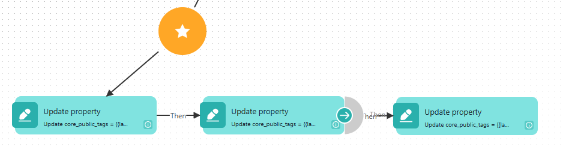

📌 Крок 1.1: Створіть нову кампанію
У розділі Realtime Campaigns/Scheduled Campaigns → Create Campaign → оберіть тип кампанії.
📌 Крок 1.2: Налаштуйте тригер
Додайте подію, яка буде запускати кампанію. Наприклад:
- User Login — вхід користувача
- Custom Event — будь-яка кастомна подія
- Segment Entry — вхід у сегмент
📌 Крок 1.3: Створіть Flow з Update Property
У конструкторі флоу додайте блок Update Property:
- В полі Property виберіть "Core: JS markers"
- В полі Value вставте назву відповідного Label tags
| Name Label tags | Що робить | Куди вставляти |
|---|---|---|
| {{label.func_strat_mark_user_first_level}} | Створює базовий тег (сегмент + депозит) | Перший Update Property у флоу |
| {{func_strat_mark_user_second_level}} | Створює універсальний тег (title) | Другий Update Property у флоу |
| {{func_strat_mark_user_third_level}} | Створює груповий тег (test/control) | Третій Update Property у флоу |
Або просто склонуйте вже налаштовану кампанію для прикладу example_setting_campaign_for_stratification і відредагуйте необхібні налаштування тригеру
💡 Важливо:
Блоки Update Property мають йти послідовно один за одним. Спочатку перший рівень, потім другий, потім третій.
